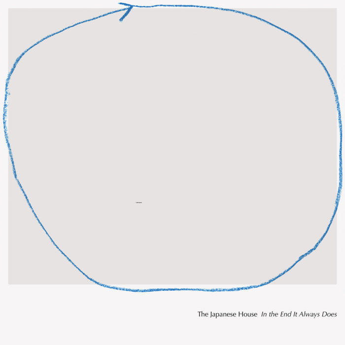

This is an album about a disintegration of a polycule
The running theme throughout the album is the cyclical nature of things. The songs follow a couple of 5 years who meet the artist (The Japanses House) and fall in love, only for one of the original members of the couple to leave.